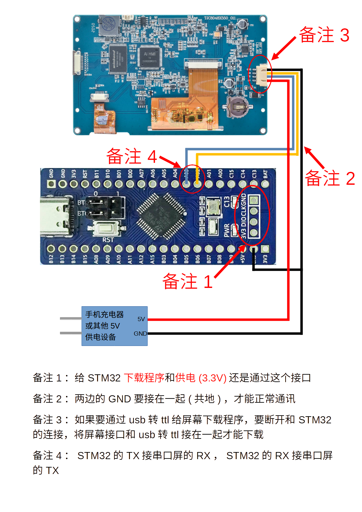
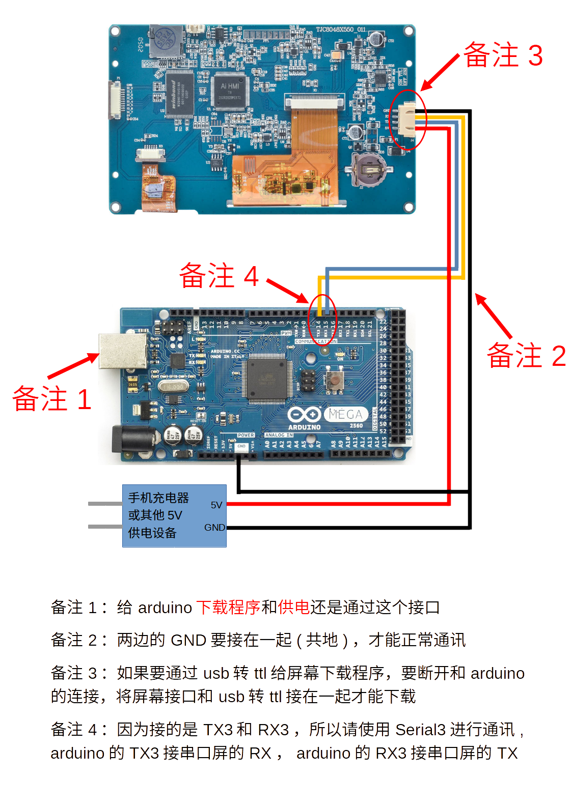
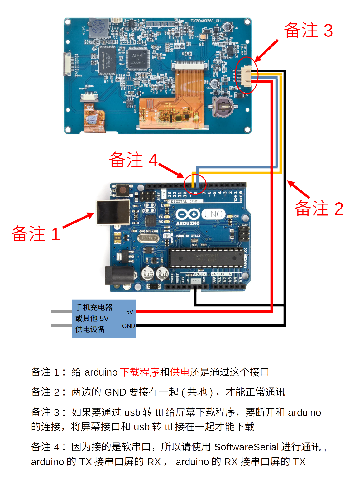
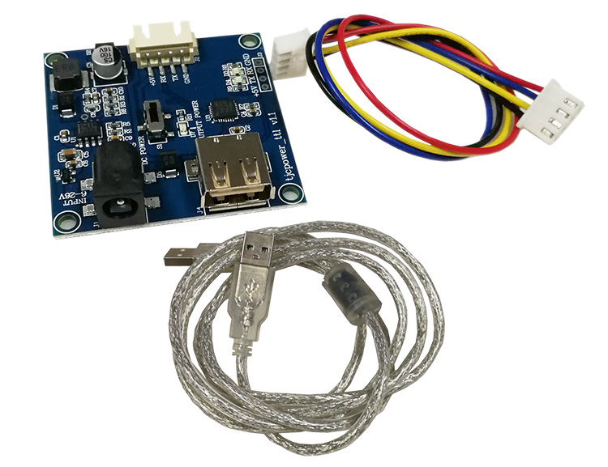
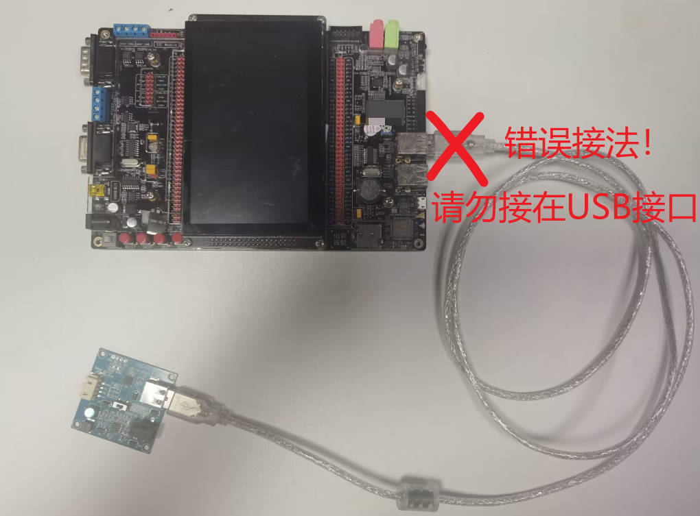
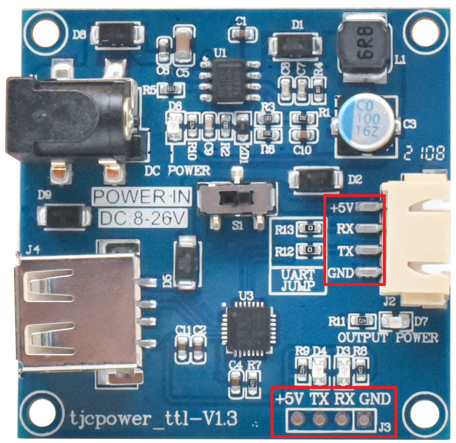

串口屏与单片机连接
串口屏连接stm32

串口屏连接arduino mega 2560

串口屏连接arduino mega uno

串口屏与单片机连接说明1

这是淘晶驰官方的USB转TTL转接板，其作用有以下两种：
1、电脑通过USB转TTL连接串口屏进行下载或者调试
2、电脑通过USB转TTL连接单片机进行通讯
如果不使用电脑时，请勿通过USB转TTL工具连接单片机和串口屏，怎么接都不行！
部分客户使用的是正点原子、野火等公司的开发板，看到板子上有USB口，就直接把USB转TTL工具插上去。
或者是开发板有microUSB接口或者typec接口，把自己的手机充电线插进去，这是万万不行的。
因为这时候你的单片机开发板是接入了一个USB设备而不是USART设备，除非你去驱动这个USB外设先与这个USB转TTL进行通讯，否则是不能跟屏幕进行通讯的。

正确接法如下:
请查看你的开发板的原理图，找到一个没有连接任何外设的USART串口来连接串口屏，一般上面都是标注（USARTn_TXD,USARTn_RXD）,大部分开发板的第一个串口USART0_TXD,USART0_RXD大概率已经连接了一个USB转TTL芯片用于连接电脑,请避开这个串口。
备注
连接方式如下所示
5V接串口屏5V
TX接串口屏RX
RX接串口屏TX
GND接串口屏GND
TX是Transmit（发送），RX是Receive（接收），发送对接收，接收对发送。
另外说明：有些板子和原理图标注的是TX和RX，有些板子和原理图标注的是TXD和RXD。TX就是TXD，RX就是RXD。概念都是一样的，可以不做区分。
串口屏与单片机连接说明2

上图中圈出来的两个地方，丝印对应的引脚是连通的
也就是说
右侧的+5V和底部的+5V是连通的
右侧的TX和底部的TX是连通的
右侧的RX和底部的RX是连通的
右侧的GND和底部的GND是连通的
有的客户右侧接口连接串口屏，底部接口用于连接单片机，这样是不行的，因为这个板子是有USB转TTL芯片的，会造成串口一对多，影响到串口的通讯。
任何情况下请确保单片机的这个USART串口上面只有串口屏，没有其他外设。
串口屏与单片机连接说明3
当需要额外供电时，可以另外接5V和GND到屏幕上给屏供电，但是要将串口屏的GND和单片机的GND接到一起（也就是共地），单片机的+5V供电可以不和屏幕接在一起
然后将单片机的TX连接到串口屏的RX
然后将单片机的RX连接到串口屏的TX
任何情况下请确保单片机的这个USART串口上面只有串口屏，没有其他外设。
串口屏与单片机连接说明4
如果不能确认串口屏是否可以接收到单片机的数据，可以把这个工程烧录到串口屏中试试，简易串口助手样例工程
某些3.3V的单片机，可能会无法接收到X3、X5系列串口屏的数据，但是串口屏可以接收到单片机的数据
因为X3、X5系列串口屏有其他电路用于切换TTL/232电平，他们的输出的串口电平是5V的，部分3.3V的单片机接收到5V电压可能无法正确识别
这个时候可以尝试在串口屏的TX和单片机的RX中间串1个1K电阻以降低串口电压，让单片机正确识别串口数据。
串口屏与单片机连接说明5（串口解析）
以下为单片机的串口接收程序说明
1、单片机上建议划分1KB的ram来创建一个串口环形缓冲区。
2、推荐使用串口中断模式，在中断事件中将接收到的数据放入串口缓冲区，然后清空中断标志位，退出中断。
3、在main循环中解析串口缓冲区中的数据。